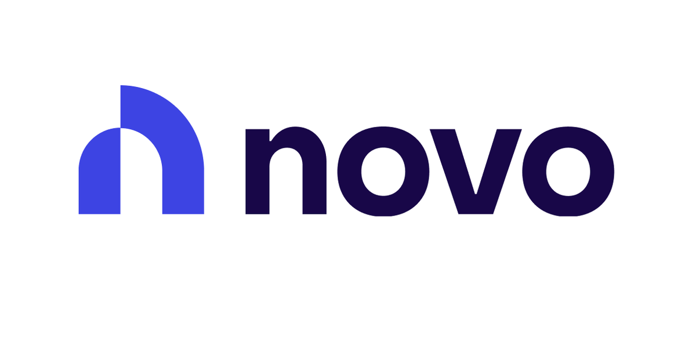

Traditional business banks were built for businesses with a CFO and a branch manager on speed dial. Most small businesses don’t have either. What they get instead is monthly maintenance fees, minimum balance rules, and separate tools for invoicing, bill pay and bookkeeping, none of which talk to each other.
If you’re still running business money through a personal account, start with why your personal bank account is hurting your business. This guide is for owners who already have a business account and are wondering whether it’s time to switch.

Why Owners Are Leaving Their Bank for Novo
1. No monthly fees
Novo business checking has no monthly fees. Across a year, that difference alone is real money for a small operation, and there are no maintenance fees to dodge by keeping a minimum balance.
2. Invoicing and bill pay built in
Send invoices, get paid and pay bills from the same place your money sits. That’s one less subscription, and one less spot where a payment can slip through the cracks.
3. Reserves: set money aside before you spend it
Reserves let you split off money for taxes, payroll or an emergency fund so it doesn’t blend into your operating balance. It’s the simplest way to stop dreading quarterly tax payments.
4. Faster money movement
Novo supports ACH, wires and FedNow instant payments, so money can move in seconds instead of days when timing matters.
5. It connects to your books
Novo integrates with QuickBooks and uses AI to help categorize expenses. That means cleaner books every month and a far easier tax season.
6. Cashback and credit when you’re ready
At the time of writing, Novo advertises 2% cashback on eligible purchases for customers with a checking balance of $5,000 or more, and 1% below that. When you need capital, Novo also offers a business loan and business credit card (issued by Continental Bank) and a merchant cash advance through Novo Funding LLC.
Open a Novo Business Account
No monthly fees. Invoicing, bill pay and Reserves included.
Open Your Free Novo Account →Novo vs. a Traditional Business Bank
| Typical traditional bank | Novo | |
|---|---|---|
| Monthly fee | Often charged unless you keep a minimum balance | No monthly fees |
| Invoicing | Separate tool | Built in |
| Setting cash aside for taxes | Open another account | Reserves, built in |
| Instant payments | Varies | FedNow supported |
| Bookkeeping | Manual exports | QuickBooks integration |
| Branches | Yes | No (app and online) |
| FDIC insurance | Yes | Yes, via Middlesex Federal Savings, F.A. |
The Honest Trade-Offs
- No branches. If you like to walk in and talk to a banker, Novo isn’t that.
- Check how cash deposits work first. If your business handles a lot of cash, confirm Novo’s current cash deposit options before you switch.
- Novo is a fintech, not a bank. Your deposits are held at its FDIC-member partner bank, so read the account agreement the same way you would with any bank.
Best fit: freelancers, consultants, ecommerce sellers, agencies and service businesses that get paid digitally and want banking, invoicing and bookkeeping in one place.
How to Switch Without Missing a Payment
- Open Novo first. Don’t touch your old account yet.
- Redirect incoming money. Update payouts from Stripe, Square, Shopify or PayPal, and put the new account details on your invoices.
- Move automatic payments one at a time. Start with software subscriptions, then loans and insurance.
- Set up Reserves for taxes on day one, while you’re already thinking about it.
- Connect QuickBooks so your books keep going without a gap.
- Keep the old account open 30–60 days. Close it only after a full billing cycle with no activity.
The Bottom Line
Your bank should save you time and money, not cost you both. For most small businesses that get paid digitally, Novo’s no-monthly-fee account with invoicing, Reserves and bookkeeping built in is a straightforward upgrade. Open it, move your money over carefully, and spend the time you get back on the business.
Ready to Ditch the Bank Fees?
Open a Novo account online and keep your old account until the switch is done.
Get Started with Novo →Frequently Asked Questions
Is Novo a real bank?
Novo is a financial technology company, not a bank. Banking services are provided by Middlesex Federal Savings, F.A., Member FDIC, so eligible deposits are FDIC-insured up to $250,000.
Does Novo charge monthly fees?
Novo business checking has no monthly fees. Confirm current terms for specific services like wires or cash deposits on Novo's site before you switch.
What does Novo offer beyond a checking account?
Novo includes physical and virtual debit cards, invoicing, bill pay, expense management, Reserves sub-accounts for setting money aside, ACH, wires and FedNow instant payments, and a QuickBooks integration. It also offers a business loan and business credit card (issued by Continental Bank) and a merchant cash advance through Novo Funding LLC.
How do I switch my business bank account to Novo?
Open your Novo account first and keep your old account open for 30 to 60 days. Update where your payment processors and clients send money, move automatic payments and subscriptions one at a time, then close the old account once nothing has hit it for a full billing cycle.
Disclosure: JWAT Enterprises Inc may earn a commission if you sign up through links on this page, at no extra cost to you. Pricing and features were checked on September 27, 2026 and can change; confirm current terms on the provider’s site.
← Back to Blog